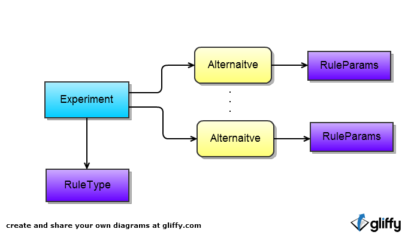

Experiment 可以包含多个 Alternative
Experiment 指定一个 RuleType
Alternative 配置一个 RuleParams
Experiment 上的 RuleType 和 Alternative 上的 RuleParams 就可以计算每一个 Alternative 的分配规则
| URL | Method | Request | Response | |
|---|---|---|---|---|
| /ab/experiments | GET | 无 | XML,JSON |
获得Experment列表
|
| POST | XML,JSON,FORM | text/plain |
创建一个新Experment, 返回创建的资源地址
|
|
| /ab/experiments/{elementId} | GET | 无 | XML,JSON |
获得指定的 Experiment
|
| POST | FORM | 无 |
更该指定Experment的部分信息
|
|
| PUT | XML，JSON | 无 |
更新指定Experment
|
|
| /ab/experiments/{elementId}/alternatives | GET | 无 | XML,JSON |
获得指定的 Experiment 的所有 Alternative
|
| POST | XML,JSON,FROM | text/plain |
为指定的Experment创建一个新 Alternative
|
|
| /ab/experiments/{elementId}/alternatives/{alternativeId} | GET | 无 | XML,JSON |
获得指定的 Experiment 的一个指定的 Alternative
|
| POST | FORM | 无 |
修改一个指定的 Alternative
|
|
| PUT | XML,JSON | 无 |
更新一个指定的 Alternative
|
|
| /ab/experiments/{elementId}/alternatives/{alternativeId}/rule-params | GET | 无 | XML,JSON |
获得一个指定的 Alternative 的 RuleParams
|
| POST | FORM | 无 |
修改一个指定的 Alternative 的 RuleParams
|
|
| PUT | XML,JSON | 无 |
修改一个指定的 Alternative 的 RuleParams
|
|
| /ab/rule-types | GET | 无 | XML,JSON |
获得 RuleType 列表
|
| POST | XML,JSON,FORM | text/plain |
新增一个新的 RuleType , 返回创建的资源地址
|
|
| /ab/rule-types/{ruleTypeId} | GET | 无 | XML,JSON |
获得指定的 RuleType
|
| POST | FORM | 无 |
更该指定 RuleType 的部分信息
|
|
| PUT | XML，JSON | 无 |
更新指定 RuleType
|
<?xml version="1.0" encoding="UTF-8" standalone="yes"?>
<experiment>
<url>http://localhost:8080/ab-service/experiments/2</url>
<name>Test One</name>
<description>Test One</description>
<startDate>2012-11-01 00:00</startDate>
<endDate>2012-12-31 00:00</endDate>
<isActive>true</isActive>
<ruleType>
<url>http://localhost:8080/ab-service/rule-types/1</url>
<code>PERCENT</code>
<description>group the user by percent.</description>
</ruleType>
<alternatives>
<alternative>
<url>http://localhost:8080/ab-service/experiments/2/alternatives/7</url>
<code>A_A</code>
<name>Alternative a</name>
<description>test alternative a</description>
<isActive>true</isActive>
<ruleParams>
<url>http://localhost:8080/ab-service/experiments/2/alternatives/7/rule-params</url>
<param1>30</param1>
</ruleParams>
</alternative>
<alternative>
<url>http://localhost:8080/ab-service/experiments/2/alternatives/8</url>
<code>A_B</code>
<name>Alternative b</name>
<description>test alternative b</description>
<isActive>true</isActive>
<ruleParams>
<url>http://localhost:8080/ab-service/experiments/2/alternatives/8/rule-params</url>
<param1>30</param1>
</ruleParams>
</alternative>
</alternatives>
</experiment>
{
"url": "http://localhost:8080/ab-service/experiments/2",
"name": "Test one",
"description": "Test one",
"startDate": "2012-11-01 00:00",
"endDate": "2012-12-31 00:00",
"isActive": true,
"ruleType": {
"url": "http://localhost:8080/ab-service/rule-types/1",
"code": "PERCENT",
"description": "group the user by percent."
},
"alternatives": [
{
"code": "A_A",
"url": "http://localhost:8080/ab-service/experiments/2/alternatives/7",
"name": "Alternative a",
"description": "test alternative description a",
"isActive": true,
"ruleParams": {
"url": "http://localhost:8080/ab-service/experiments/2/alternatives/7/rule-params",
"param1": "30",
"param2": null,
"param3": null,
"param4": null,
"param5": null,
"param6": null,
"param7": null,
"param8": null,
"param9": null
}
},
{
"code": "A_B",
"url": "http://localhost:8080/ab-service/experiments/2/alternatives/7",
"name": "Alternative b",
"description": "test alternative description b",
"isActive": true,
"ruleParams": {
"url": "http://localhost:8080/ab-service/experiments/2/alternatives/7/rule-params",
"param1": "30",
"param2": null,
"param3": null,
"param4": null,
"param5": null,
"param6": null,
"param7": null,
"param8": null,
"param9": null
}
}
]
}